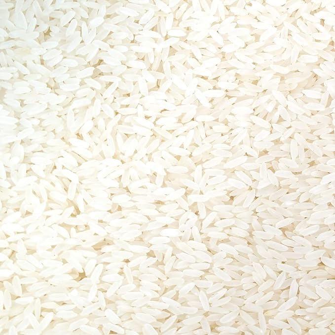

Ponni rice is a variety of rice developed by Tamil Nadu Agricultural University in 1986. It is widely cultivated in Tamil Nadu, a state in India and is a hybrid variety of Taichung 65 and Myang Ebos 6080/2. Since the Kaveri River is also called 'Ponni' in Tamil literature, the rice could have been named after the river. The rice is mostly cultivated along the banks of the Kaveri in the cities of Ariyalur, Trichy, Madurai and its mouth.
Black rice, also known as purple rice or forbidden rice, is a range of rice types of the species Oryza sativa, some of which are glutinous rice. There are several varieties of black rice available today. These include Indonesian black rice, Philippine heirloom balatinaw black rice and pirurutong black glutinous rice, and Thai jasmine black rice.[1] It is also known as chak-hao in Manipur, India and as “kavuni arisi” or “kavuni rice” in Tamil Nadu, India. The bran hull (outermost layer) of black rice contains one of the highest levels of anthocyanin pigment found in food.[2] The grain has a similar amount of fiber to brown rice and like brown rice, has a mild, nutty taste.[3] Black rice has a deep black color and usually turns deep purple when cooked. Its dark purple color is primarily due to its anthocyanin content,[4] which is higher by weight than that of other colored grains.[5] It is suitable for creating porridge, dessert, traditional Chinese black rice cake, bread, and noodles.
Basmati (pronounced ['bɑːsmət̪iː]) is a variety of long, slender-grained aromatic rice which is traditionally grown in the Indian subcontinent, mainly India, and Pakistan, as well as some regions of Sri Lanka and Nepal.[2] As of 2019, India accounted for 65% of the international trade in basmati rice, while Pakistan accounted for the remaining 35%.[3][4] Many countries use domestically grown basmati rice crops;[5] however, basmati is geographically exclusive to certain districts of India and Pakistan.[6] According to the Indian Agricultural and Processed Food Products Export Development Authority (APEDA), a rice variety is eligible to be called basmati if it has a minimum average precooked milled rice length of 6.61 mm (0.260 in) and average precooked milled rice breadth of up to 2 mm (0.079 in), among other parameters.
Samba is a variety of rice grown in Tamil Nadu, some other parts of India and Sri Lanka, and has a small ovular grain, compared to the long grain of basmati rice.[1]
Samba rice has a distinct taste and can be described[who?] as having a more 'starchy' or 'corny' flavor.And also liked by many as it tastes better than other rice and also it becomes less harder after cooking.[citation needed].
The grain itself is much harder than the other varieties and when cooked is less[citation needed] 'fluffy' in texture so gives a more filling[citation needed] meal with a higher[citation needed] caloric value.
All Samba rice grain is harvested locally by the mallas[who?] of India and there are many sub-varieties ranging in grain size and price. Seeraga Samba is the most expensive sub-variety and has the finest grain. It is approximately a third the size of a grain of basmati rice[citation needed].

Sticky rice in bamboo is a common Southeast Asian dish consisting of sticky rice roasted inside specially prepared bamboo sections of different diameters and lengths. It is consumed both as a savory food and as a sweet dessert.
The dish is known by various names throughout Southeast Asia, including paung din (ပေါင်းတင်း) or kauk hnyin kyi dauk (ကောက်ညှင်းကျည်တောက်) in Burmese, kralan (ក្រឡាន) in Khmer, and khao lam (ข้าวหลาม, pronounced [kʰâw lǎːm]; ເຂົ້າຫລາມ, pronounced [kʰȁw lǎːm]) in Lao and Thai and cơm lam in Vietnamese. In Lao and Thai, khao means rice and lam means the cooking process, which involves roasting the contents in prepared bamboo sections, while in Vietnamese cơm lam translates as "bamboo cooked rice".
In Malaysia and Indonesia, it known as lemang, which is typically eaten during Eid-ul-Fitr celebrations, where it can be eaten with rendang. In the Philippines, this is known as binungey.

Known for its easy digestive ability, Kichili Samba has a unique flavor. Kichili Samba Rice boosts immune system, strengthens muscles and makes skin look shiny. Good for diabetic patients. It can be used to prepare Briyani, Sweet Kozhukattai and other rice recipes.

Samba rice is grown extensively in the South Indian state of Tamil Nadu. Rice grown in Samba season (August through January) is referred to as Samba rice.[2] This rice is grown for a longer duration compared to other types of rice.[citation needed] A subvariety of the Samba, known as the Seeraga Samba or Jeera Samba (in Tamil: சீரக சம்பா, which means 'Cumin samba', due to its resemblance to cumin seeds), is popular for consumption in south-east India.[3] It is exclusively cultivated along the Cauvery river and peculiarly in its delta, notably in the Vellapallam and Keevalur talukas of Nagapattinam district, Uppiliyapuram of Tiruchirappalli district and in various areas of Thanjavur district.[3] This subvariety was presented in 2018 by an association of farmers to benefit of a geographical indication (GI tag), the request is currently being processed.[3][4]